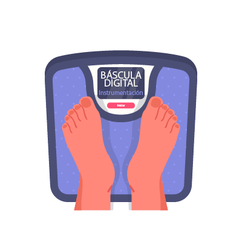

Por: Reyes Cuevas Abraham Peñarrieta Villa Jesus Vega Miranda Daniel
Báscula Digital
Se desarrolló utilizando una galga extenciométrica, tambien se hizó uso de algunos circuitos tales como un amplificador de instrumentación.

Medidor de Pulso Cardíaco
Se desarrolló utilizando un emisor y un receptor de luz infrarroja los cuales funcionan a partir de la luz que rebota en el flujo de sangre que llega a nuestro dedo.
Medidor de Temperatura
Se desarrolló utilizando un termistor NTC el cual a grandes rasgos podemos verlo como una resistencia la cual varía su valor conforme a la temperatura que perciba.